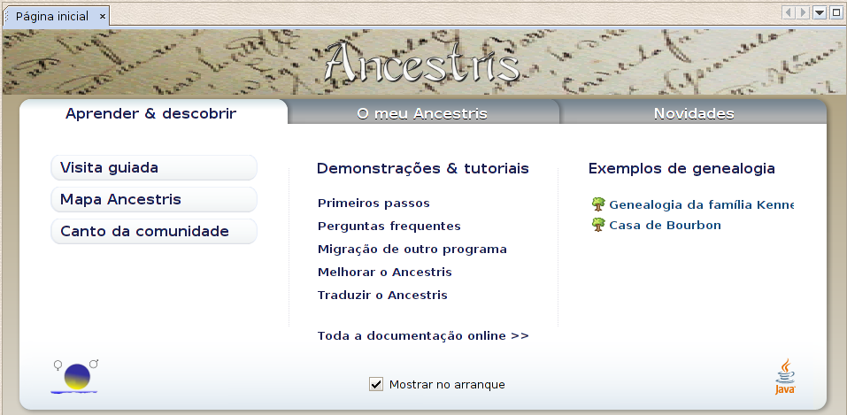

UTILIZAÇÃO BÁSICA
Como começar a usar o Ancestris
Ancestris é um programa configurável. Assim,
para um melhor uso, aconselhamos uma visita ao capítulo
"As
primeiras definições".
E agora, algumas sugestões para o ajudar a começar a trabalhar com o programa:
| Uma boa maneira de aprender a usar o Ancestris sem danificar
o seu ficheiro de genealogia? Use os exemplos de genealogia oferecidos no
ecrã de boas vindas. |

(o ecrã de boas vindas permite-lhe
começar a usar o Ancestris: abra os exemplos de genealogias e tenha acesso às
páginas de ajuda principais da Wiki do Ancestris.)
Como importar um ficheiro de genealogia
Tudo o que precisa de saber para importar
uma genealogia com sucesso.
Como construir a sua genealogia
Quando o Ancestris inicia, a página/separador
"O meu Ancestris" oferece a possibilidade de usar um assistente que
o guiará passo a passo na criação do seu ficheiro de
genealogia.
Para aqueles que preferem um método alternativo:
Como gravar o seu trabalho
Não se esqueça de gravar o seu trabalho regularmente.

|
Recomenda-se uma cópia de segurança externa, ninguém
está livre de um problema de hardware!!
|
|